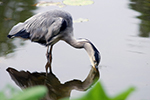
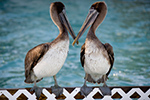
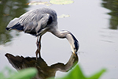
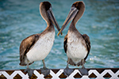

Welcome to Backyard Birds of Utah!
If you love birdwatching like we do, you should enjoy looking around this site. Take a look at our Bird Profiles and take the opportunity to complete our survey.
Daily Favorites
 





American Goldfinch Perched on a Pot
What Our Customers Have Been Saying
"Wow!!! Who would have thought all these birds live in Utah. I was attracted to the Birds of Utah calendar because of the great horned owl on the cover. I especially like finding and watching raptors such as: hawks, bald and golden eagles, vultures and owls. More...